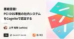

inSmartBank
https://blog.smartbank.co.jp/
B/43を運営する株式会社スマートバンクのメンバーによるブログです
フィード
検証目的から逆算するMinimum Verifiable Productを見極める 1
1
inSmartBank
こんにちは。スマートバンクでプロダクトマネージャーをやっているinagakiです。 直近で新規事業の立ち上げにプロダクトマネージャーとして携わる機会があり、初期の仮説検証を最速で行う必要があったため、”開発しない”検証を行っていました。 エンジニアによる開発をほとんどせず、外部ツールなどを駆使して2週間程度で実際にユーザーへ提供する爆速検証を行った際の、仮説を小さく検証する工夫や学びについて書いてみようと思います。 経緯 とあるテーマについて、既存ユーザーに向けた新たな価値提供とビジネスの可能性を検証するという目的のもと立ち上がったプロジェクトで、プロダクトマネージャー（PM）とデザイナーを中…
14時間前

悪戦苦闘！ PCI DSS準拠の社内システムをCognitoで認証する 1
inSmartBank
はじめに こんにちは！SREを担当してます上平と申します。 このエントリーではスマートバンク内部の業務で使われるシステムを構築した際の話を苦労した内容や学びを含めてご紹介したいと思います！ 我々のようなカード発行業者はカード番号からユーザーを特定する業務があります。 この業務を効率化し、よりセキュアに担当者が業務を実施できるように管理画面を構築する必要がありました。また、このシステムはPCI DSSに準拠するように構築する必要があります。 今回は構築する際の技術選定や問題点についてご紹介し、これから同じようなシステムを構築される方の参考になれば幸いです。 PCI DSSとは PCI DSSとは…
2日前
中途入社3ヶ月で信頼されているエンジニアのストイックな姿勢をUXリサーチャーが聞いてみた！ 1
inSmartBank
こんにちは！スマートバンクでUXリサーチャーをしているmaayaです。 スマートバンクでは、様々な分野で活躍しているメンバーが揃っており、経歴や社歴の違いはあれど、全員がプロフェッショナルの意識をしっかりと持っています。 私はリサーチャーとして、チーム横断で様々な方と協業するので、他職種の幅広い視点や、これまでの経験を深く理解することで、良いリサーチ活動につながると考えています。 そこで、前職ではGo言語を使用し、Rubyのご経験はなかったものの、中途入社3ヶ月で既に活躍されているkurisuさんに、成長に対するストイックな姿勢や、日々心がけていることについて、お話を伺いました！ 「成長できる…
5日前
オリジナルのZendeskアプリ開発でCS生産性を向上させる 3
inSmartBank
こんにちは、おはようございます、こんばんは、スマートバンクでCREをしている佐藤（@tmnbst）です。 弊社ではお問い合わせの対応にZendeskを利用しています。Zendeskには、アプリマーケットプレイスがあり、Zendeskの機能を拡張するためのアプリを追加することができます。これにより、標準のZendeskにはない機能を追加することができます。また、アプリはユーザー自身で開発することもでき、自社のCS業務に合わせたアプリを開発することができます。 今回は、オリジナルのZendeskアプリを開発して、CS生産性を向上させた事例を紹介したいと思います。 開発のきっかけ 日々、CSチームが…
8日前
スマートバンクのカスタマーサポート部を紹介します 1
inSmartBank
こんにちは！カスタマーサポート部のnyancoです。 2022年にカスタマーサポート部1人目の社員としてのインタビュー記事がでましたが、そこからもう2年経過していて最近のカスタマーサポート部についても紹介したくなったのでこちらのブログを書いています。 今回は、メンバーを大募集中なカスタマーサポート部の現在のチームについて・目指していること・助けてほしいことなど2024年のカスタマーサポート部についてたっぷり紹介したいと思います。 カスタマーサポート部の職務範囲 スマートバンクのカスタマーサポート部はいわゆる「お問い合わせ対応」だけではなく、KYC審査などカード発行に関する業務、不正利用がないか…
13日前

ユーザーが”本当に欲しいもの”を見つけるためのコンセプトテスト
inSmartBank
こんにちは。スマートバンクでプロダクトマネージャーをやっているinagakiです。 ユーザーの抱える課題に対してどういった方向性で解決すると良さそうかを考えたく、コンセプトテストを実施してみたのですが、良かったこともあれば難しいなあと感じる部分がありました。 どうしたらユーザーが”本当に欲しいもの”を見つける機会として、コンセプトテストを上手に活用できるか考えてみました。 前提 今回は新しい取り組みをするプロジェクトにおいて、ある程度定義されたユーザー像とその課題に対して、解決策の方向を探るという目的で実施しました。 事前にユーザーを理解したり、課題を見つけるためのリサーチを行なっていたため、…
19日前
LayerXとスマートバンクの「事業開発」の違いと共通点
inSmartBank
こんにちは！スマートバンクで事業開発を担当している土屋（takeshi）です。 参考blog 👉 toBの事業企画経験をtoCに活かしインパクトをもたらす新事業を 2024/5/22(水)に「プロダクトドリブンな組織で、非連続な事業成長を実現するための事業開発とは？」と題して、LayerXさんと合同のBizDevオフレコトークイベントを開催しました。 smartbank.connpass.com 事業開発担当に加えて、プロダクトマネージャーやUXリサーチャーも参加してトークセッションを行い、それぞれの事業開発としてのミッションや、具体的な事例も踏まえた事業開発プロセスについてお話しました。 L…
1ヶ月前
複雑な構成要素を持つUIとの向き合い方 〜新・支出グラフでの実例〜
inSmartBank
こんにちは。スマートバンクで iOS / Android エンジニアをしている nakamuuu です。 4月に開催したオンラインイベント 『B/43 TECH TALK〜「お金の使いすぎ」を防ぐ新しい家計管理機能開発の裏話〜』 では、直近リリースした新機能の開発プロセスの裏側を紹介しました。職種幅広くたくさんの方にご参加いただき、ありがとうございました 🙌 blog.smartbank.co.jp このイベントで私からは 「複雑な構成要素を持つUIとの向き合い方 〜新・支出グラフでの実例〜」 のタイトルで、 "複雑性の高いUIの構築における考え方" をテーマに簡単なLTをさせていただきました…
1ヶ月前
スマートバンクに入社しました
inSmartBank
こんにちは！ 2024年5月よりサーバーサイドエンジニアとしてスマートバンクに入社しましたotakaです。 入社して1ヶ月経ちましたので、スマートバンクに入社するまでの経緯と入社後の感想を紹介します。 今一緒に働いてる方やこれから一緒に働くかもしれない方に向けて届いたらと思います！ これまでのキャリア まずは簡単に自己紹介をさせてください。 私のキャリアはエンジニアとは全くかけ離れている理学療法士という職業から始まり、2年半の間、患者さんのリハビリや退院後の生活指導を行っていました。 その後、サーバーサイドエンジニアにキャリアチェンジして、3年間で副業も合わせると4社経験させて頂きました。 転…
1ヶ月前
第二新卒で入社して1.5年。エンジニアの成長機会・環境をUXリサーチャーが聞いてみた！
inSmartBank
こんにちは！スマートバンクでUXリサーチャーをしているmaayaです。 スマートバンクでは、様々な分野で活躍されてるメンバーが揃っており、4月に入社してから毎日が学びに満ちています。 リサーチャーはチーム横断で様々な方と協業するので、他職種の幅広い視点や、これまでの経験を深く理解することで、良いリサーチ活動につながると考えています。 そこで、入社時にはRubyのご経験がほぼなかったものの、1.5年経った現在は新機能のリリースを単独で導き、プロジェクトの課題解決フェーズもリードされるなど、日々活躍されているhiroteaさんにスマートバンクでの成長機会と環境について、お話を伺いました！ （入社し…
1ヶ月前
RubyKaigi 2024スポンサー舞台裏と、技術カンファレンスへの向き合い方
inSmartBank
こんにちはスマートバンクでCTOをしております＠yutadayoです。5/15 ~ 17に RubyKaigi 2024 が開催され、スマートバンクはスポンサーをさせていただきました。 私個人としても久しぶりの RubyKaigi の参加でしたが、結論から言うとめちゃくちゃ楽しかったです、セッションを聞くこと、参加者と交流すること、スポンサー活動をすること、どれも楽しく充実した3日間でした。 今回もイベントへのスポンサーを通して様々なコミュニティイベントや広報企画を実施してきました。当日の感想も交えて、今回のスポンサーに関連して行った施策を振り返っていければと思います。 RubyKaigi に…
1ヶ月前
『B/43 TECH TALK 〜 「お金の使いすぎ」を防ぐ新しい家計管理機能開発の裏話〜』を開催しました
inSmartBank
2024年4月、『B/43 TECH TALK 〜 「お金の使いすぎ」を防ぐ新しい家計管理機能開発の裏話〜』と題してイベントを開催し、約60名の方に参加いただきました。ご参加いただいたみなさま、ありがとうございました！ スマートバンクが3月に発表した「お金の使いすぎを防ぐ新機能」は、週ごとの支出をリアルタイムで管理し、使いすぎに気付けるようにするサポート機能です。 物価上昇が続く中、全体では約5割、20代に至っては約7割の家庭がつけている家計簿ですが、「使った結果を見るツール」になってしまうと使いすぎは防げません。 「週単位で予算や支出を調整できるようにしたい」というB/43ユーザーの声に応え…
1ヶ月前
Hydration Sponsorの裏側を紹介します🥤 #rubykaigi
inSmartBank
こんにちは、nyancoです。 先日行われましたRubyKaigi 2024にてスマートバンクはHydration Sponsorとして協賛させていただきました。このブログではHydration Sponsorをやることになった経緯や狙い、やったことについてつらつらと書こうと思います。 スポンサーの経緯 なぜRubyKaigiのスポンサーをするのか？というのは以下の通りです。 Rubyコミュニティを支援したいから 弊社エンジニアが参加したいカンファレンスだから 弊社エンジニアが登壇にチャレンジしたいカンファレンスで、会社としてバックアップしたいから 弊社のことをたくさんのRubyistに知って…
1ヶ月前
ポスターセッション一気見！リサーチカンファレンス当日レポート
inSmartBank
こんにちは！スマートバンクでUXリサーチャーをしているHarokaです。 2024/05/18（土）に専修大学神田キャンパス10号館で開催されたリサーチカンファレンス。 スマートバンクは、初年度の2022年に登壇させていただいて以来、ポスターセッション（A-14）にて登壇することになりました🎉 researchconf.jp 開催が大学とのこともあり、学生さんのご参加も盛んで、今までよりも門戸が広く、多くの方に興味を持ってもらえるように進化を遂げています！ 特に、当社が登壇するポスターセッションは今年初の取り組みで、私たち登壇経験のあるメンバーも参加しやすく、「その後どうなったの？」を共有でき…
1ヶ月前
Research Conference 2024 ポスターセッション初参加の裏側
inSmartBank
こんにちは！スマートバンクでUXリサーチャーをしているHarokaです。 2024/05/18（土）開催のリサーチカンファレンスで、ポスターセッションに参加しました！ これまで、複数回登壇経験があり、資料も作り慣れてきたつもりでしたが、ポスター形式での登壇は初めてだったので、実際に取り組んだことを失敗談も含めてご紹介したいと思います。 企画 思い返せば2ヶ月前......Research Conferenceのポスターセッションが公募開始されたことを知り、一度登壇していても大丈夫かな？と不安になりながら応募しました。 どんな話題なら来場者のみなさんとディスカッションできそうか...と考え、昨年…
1ヶ月前
【RubyKaigi 2024】型特集！型の最新情報についてセッションレポート #rubykaigi
inSmartBank
内容 こんにちは！RubyKaigi 2024でHydration Sponsorをしているスマートバンクです！ 最終日のレポートでは、RubyKaigi 2024でホットな話題となっていたRubyの「型」をテーマにしたセッションのレポートをお送りします！ Rubyの型にまつわる最新動向をお楽しみください！！ Day1 Let's use LLMs from Ruby 〜 Refine RBS codes using LLM 〜 黒曜さんのセッションでは、Rubyコードから RBS型を推測するツール「Ruby Goose」を作った経緯や、その仕組について説明されました。 以下に、その内容を簡単…
2ヶ月前
【RubyKaigi 2024】 2日目もドリンクスペース大盛況 & Lightning TalksでKoshibaがトークしました！ #rubykaigi
inSmartBank
RubyKaigiの情報をウォッチしてる皆様、こんにちは、RubyKaigi 2024でHydration Sponsorしているスマートバンクのmitaniです！ RubyKaigi 2024も2日目に突入！快晴に恵まれ熱狂の中で始まった1日目に引き続き、2日目も熱いトークで会場が盛り上がりましたね！！ スマートバンクはHydration Sponsorとして、2日目もRubyKaigiの参加者達に美味しい冷えた飲み物を提供してきました（もちろん3日目もやります！！） ！そして2日目のLightning Talksでは弊社からMiyuki Koshiba が登壇しました！ 昨日に引き続き、R…
2ヶ月前
【RubyKaigi 2024】 Hydration Sponsorとしてドリンクを配ってます & 弊社から2名登壇しました！ #rubykaigi
inSmartBank
RubyKaigiの情報をウォッチしてる皆様、こんにちは、RubyKaigi 2024でHydration Sponsorしているスマートバンクのmitaniです！ ついにRubyKaigi 2024が開幕しました 👏 👏 👏 @tompng さんのkeynote 「Writing Weird Code」から始まり、大盛り上がりな1日目でしたね！！ スマートバンクはHydration Sponsorとして、RubyKaigiの参加者達に美味しい冷えた飲み物を提供しております！（明日以降もやります！！） そして初日は、弊社から ohbarye と Daisuke Aritomo (osyoyu)…
2ヶ月前
RubyKaigi 2024でスマートバンクのメンバーとお会いしましょう #rubykaigi
inSmartBank
みなさん、めんそーれ！ nyancoです。いよいよRubyKaigiです！皆さん、準備はできてますか〜！？ ついにRubyKaigi 2024ですね！スマートバンクからは2名登壇、LTが1名、RubyKaigi 2024の運営メンバー（デザイナー）が2名、そしてHydration Sponsorとして協賛させていただきます！ smartbank.co.jp 本日は今回のスポンサーに関するトピックをまとめて紹介いたします。 スマートバンクから2名登壇、1名LTします ohbaryeとosyoyuの2人が登壇、chobishibaがLT をします！ それぞれの登壇情報やLTについては以下をご覧くだ…
2ヶ月前
孤独のCTOグルメ 沖縄編 #rubykaigi # 孤独のCTOグルメ
inSmartBank
こんにちは！明日からいよいよRubyKaigi 2024が始まりますね🏝️ このブログでは、SmartBankとして3回目の開催となる、CTO堀井雄太がカンファレンス会場周辺のグルメを巡る「孤独のCTOグルメ RubyKaigi 2024スペシャル ~CTO堀井雄太『探さないでください。』~ 」をお送りします！ 会場なは〜と近くで「気軽に」入れるお店をpickしたので、RubyKaigiのお供にぜひご覧ください！ (記事最後に弊社のカスタムスポンサーの取り組みと登壇者についてもご紹介しております！) 孤独のCTOグルメ投稿を一挙ご紹介！ 「我部祖河食堂 げんじやー 牧志店」さん 「ポーたま 牧…
2ヶ月前
スマートバンクにサーバーサイドエンジニアとして入社しました
inSmartBank
はじめまして、2024/4/1よりスマートバンクにサーバサイドエンジニアとして入社した長澤です！ 入社してから1ヶ月が経ったため、初心を忘れないよう入社の経緯とスマートバンクに入社してこの1ヶ月どうだったのかを赤裸々にお伝えし、実際どんな会社なの？という部分を知っていただきたいと思い記事を書きました。 簡単な自己紹介 大学でシステム情報学を専攻後、ものづくりがしたく新卒でSIerの企業に入社しました。その後、数社を経て前職のヘルステック企業から初めてRubyを書き始め、Ruby歴でいうとそろそろ2年になろうかなという頃です。そこでRubyの楽しさやコミュニティの良さに触れ現在に至ります。 入社…
2ヶ月前
2人目のリサーチャーを信頼してもらうために取り組んだこと
inSmartBank
こんにちは！スマートバンクでUXリサーチャーをしているHarokaです。 スマートバンクでは、2024年4月に2人目のUXリサーチャーをお迎えすることになりました。 素敵なご縁に恵まれたのですが、受け入れ側としてどういった準備があれば安心か、意識したことは何かなどを整理し、ご紹介します。 UXリサーチャーとして1人で活動し、今後別の強力なパートナーを迎えることになった方の参考になれば嬉しいです。 応募を開始した背景 スマートバンクでは、2023年7月にB/43プラスをリリースしました。以降も、新機能の開発や新たな事業領域の探索などに継続的に取り組んでいます。チーム体制としても、プロジェクトが複…
2ヶ月前
焼きたての Ruby 3.4.0dev を携えて沖縄に行く #rubykaigi
inSmartBank
こんにちは osyoyu です。いよいよ RubyKaigi 本番が近づいていますね。 スマートバンクは RubyKaigi のスポンサーです！ Hydration Sponsor として、会場でドリンクをご提供して参加者の皆様の喉をどんどん潤します。 なんと発表者も3名（！）いますので、どうぞよろしくお願いします。 blog.smartbank.co.jp さて、今回は「どうせ RubyKaigi に行くなら最先端の Ruby をビルドしていかないか？」という内容です。ビルドにそんなに時間もかからないし、いいこといっぱいのはず。 この記事では "ruby/ruby" を "CRuby" や …
2ヶ月前
登壇者と攻略するRubyKaigi 2024 開催レポート
inSmartBank
こんにちは！スマートバンクのサーバーサイドエンジニア部です！！ 5月8日にウォンテッドリー株式会社と株式会社スマートバンクで【初心者歓迎】登壇者と攻略するRubyKaigi 2024【プロも歓迎】を開催させていただきました。 いよいよ来週に迫ったRubyKaigi 2024に向けて、スマートバンク、ウォンテッドリーの登壇メンバーから「自分のトークのここを聞いて欲しい！」「トークを100倍楽しむ予備知識」を座談会形式で発表してもらったり、スポンサー企業と参加者の方に「RubyKaigiの楽しみかた」を発表していただきました 💎 このブログでは当日話された内容を紹介します！
2ヶ月前
スタートアップ 2人目リサーチャーとして 駆け抜けた入社1ヶ月
inSmartBank
はじめまして。2024/4/1に入社したUXリサーチャーのmaayaです。 この記事に興味を持っていただき、ありがとうございます！ 記事の内容 スマートバンクは「人々が本当に欲しかったものをつくる」のパーパスの通り、創業者をはじめ、UXリサーチャーのHarokaさん、リサーチャー以外の職種の方々も、Think N1のバリューを掲げ、定性・定量のかけ合わせでリサーチの効果を思う存分、発揮している企業です。 blog.smartbank.co.jp 今後のリサーチチームの体制強化のため、4月に行った以下の取り組みについて書いていきます。 オンボーディングで「だれでも1on1」という制度を通して、各…
2ヶ月前
総額11.5億円のデットファイナンスを成功に導いた５つの大事なこと
inSmartBank
株式会社スマートバンクの下河原雄太 (X@Yshimogawara）です。 当社は2024年4月に総額11.5億円のデットファイナンスを完了させて、リリースを出させていただきました。 prtimes.jp デットファイナンス（負債調達）は、資本が厚くなるエクイティファイナンス（資本調達）とセットでやる方が貸し手（レンダー）としても検討しやすく、圧倒的王道ではあります。ただ、当社については経理・財務チームが手厚くなったのがSeries A調達（2022年7月）から半年以上経った後であることもあり、エクイティファイナンスとは完全に切り離したデットファイナンスとなりました。 その中でも、11.5億円…
2ヶ月前
スマートバンクのオンボーディング文化と、それを支える "Good First Issues" とは
inSmartBank
こんにちは、おはようございます、こんばんは、スマートバンクでCREをしている佐藤（@tmnbst）です。 スマートバンクでは毎月新しいメンバーが入社しています。新しいメンバーがスムーズに会社・チームに溶け込み、いち早く活躍できるようにするために、オンボーディングプロセスに力を入れています。 今回はオンボーディングプロセスの中でも特に重要な5つのポイントについてご紹介します。 ポイント1 : 入社時のチェックリスト ポイント2 : オンボーディング専用のSlackチャンネル ポイント3 : オンボーディングバディ・プロジェクトメンターのアサイン ポイント4 : ドキュメントとフィードバックの活用…
2ヶ月前
開発チーム一致団結のユーザビリティテストで感情が動く体験をつくる
inSmartBank
こんにちは！ プロダクトマネージャーのじょー（@jouykw）です。 みなさん、プロダクトづくりにおいて「ユーザビリティテスト」をどのように活用され、どんな印象を持たれていますか？ 開発中の機能をユーザーにテスト環境で触ってもらい、体験上詰まるポイントがないかのネガティブチェックをする工程という印象をお持ちだったりしないでしょうか？（まさに私がそうでした） 先日、家計簿プリカB/43 (ビーヨンサン) から お金の使いすぎを防ぐ家計管理サポート機能 をリリースしました。この新機能の体験において、非常に評判が良いポイントとして、下記があります。 ある日の支出が増えている際にどこで買い物をしたのか…
3ヶ月前
スタートアップの年度振り返り会を本気で開催してみた〜「良い会にするための工夫」まとめ付き〜
inSmartBank
こんにちは、全社振り返り会の企画運営チームのmitaniです！！普段はエンジニアです。 このブログでは、3月29日に実施した23年度 通期振り返り会についてレポートします！ スマートバンクでは半期に1回、全社員を集めた振り返り会を実施しています。21年度上期に初めて振り返り会を実施してから、今回で6回目の開催となりました👏👏👏 会社の成長とともに、2年半前に初めて実施した頃よりメンバーが増え、振り返り会に求められる目的やコンテンツも変わってきました。 今回は50人の壁を超えたスタートアップで、どういう事に意識しながら振り返り会を実施したのか共有できればと思います。
3ヶ月前
リマインド結婚式「セーブポイント」の裏側 〜佐藤ねじさんから学んだこと〜
inSmartBank
こんにちは。スマートバンク広報のchika（@chika_iwa_）です。 ”すでに結婚している”夫婦が誓い直す、リマインド結婚式「セーブポイント」を2月15日に開催しました。ありがたいことに反響をいただき、他社広報の方とお会いした時にも「結婚式のやつ見たよ！」と言ってもらえることが多かったので、今回は企画から運営までの裏側をまとめてご紹介します。 そして、この企画はブルーパドル社の佐藤ねじさんと一緒に取り組んだものです。SNSでバズる企画の作り方や細部へのこだわりなど、佐藤ねじさんから学んだことが多かったので、最後に学びをまとめてみました。 SNS企画やPRイベントの企画・運営に興味がある方…
3ヶ月前